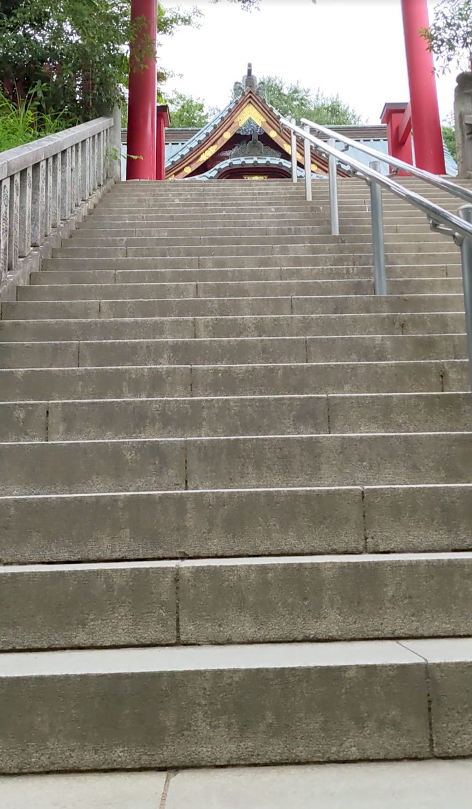
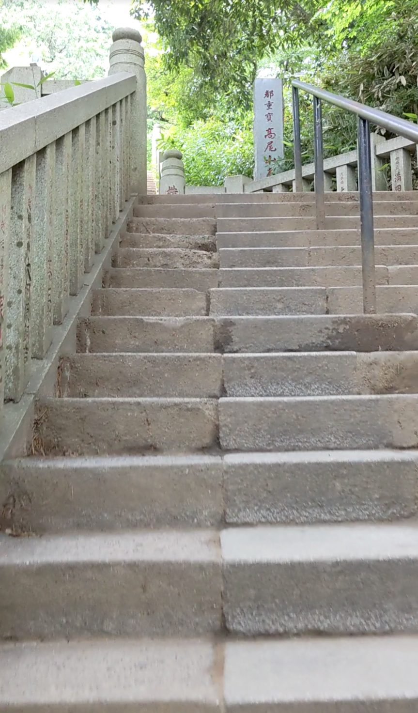
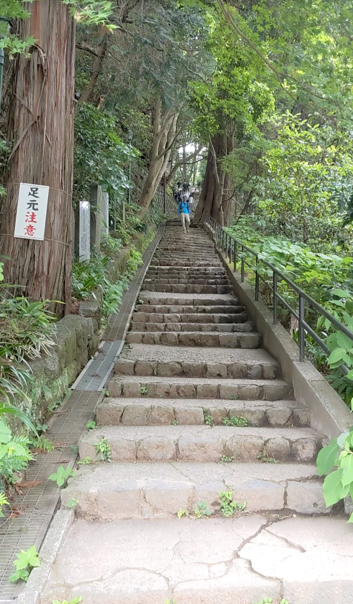

高尾山の登山コース（1号路）には、さる園・野草園や飲食店、お土産屋など、さまざまな観光スポットが点在しています。その中でも薬王院は、登山コースの中盤に位置するハイライトのひとつ。薬王院を通過するとき、実にさまざまな表情の石段に出会うことができます。京王高尾線の高尾山口駅から1号路を徒歩で登ると約40分、ケーブルカー（有料）を使えばより早く到着できます。
京王高尾線「高尾山口駅」下車。1号路を徒歩で登ると薬王院エリアまで約40分。ケーブルカー（高尾山駅下車）を利用すればより短時間でアクセスできます。登山道の案内板に従って進むと薬王院に到着します。
石段が複数あり、場所によって段差の高さや状態が異なります。歩きやすいグリップのある靴、水分補給は必須です。古びた石段は滑りやすい箇所もあるので足元に注意してください。登山装備で臨むのが安心です。
高尾山の1号路は、前半は比較的なだらかな坂道が続きます。ただ中盤に差しかかると、薬王院エリアに入り、一気に雰囲気が変わります。本堂へと向かう石段は形が整っていて、赤くて大きな鳥居が横にそびえ、参道らしい堂々とした印象です。登山の途中でこれだけしっかりした石段に出会えるというのが、高尾山の懐の深さだと思いました。

一方で、少し進むと趣がまったく異なる石段が現れます。角が欠けていて、少し古びた感じの石段です。そばに立つ石碑の文字もやや曇った感じで読みにくく、長い歴史の積み重ねを感じさせます。先ほどの整った参道とは対照的な、時の流れを感じる石段です。

さらに進むと、木々が左右から枝を伸ばしてアーチを作る石段が現れます。段差は低めで登りやすく、緑のトンネルをくぐりながら進む感覚が心地よいです。整った参道、歴史ある古石段、そして自然のアーチ——薬王院エリアを通過するだけで、これほど多様な石段の表情に出会えるのは、なかなかありません。

高尾山の1号路は全体的にコースが整備されていて、登山初心者でも歩きやすいルートです。前半のなだらかな坂道が続いた後、薬王院エリアでこうして複数の石段と出会うことが、程よい気分転換になります。高尾山を訪れる際はぜひ薬王院エリアの石段ひとつひとつをじっくり見ながら、それぞれの表情の違いを楽しんでみてください。